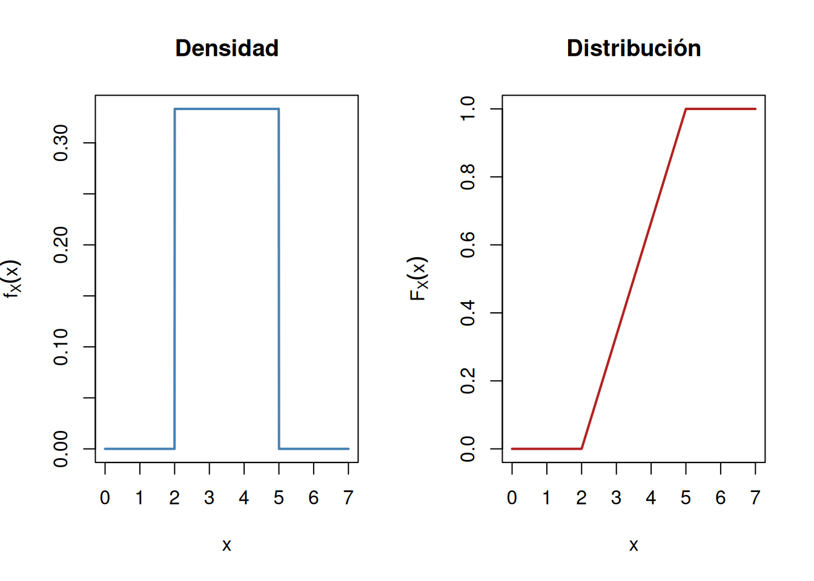
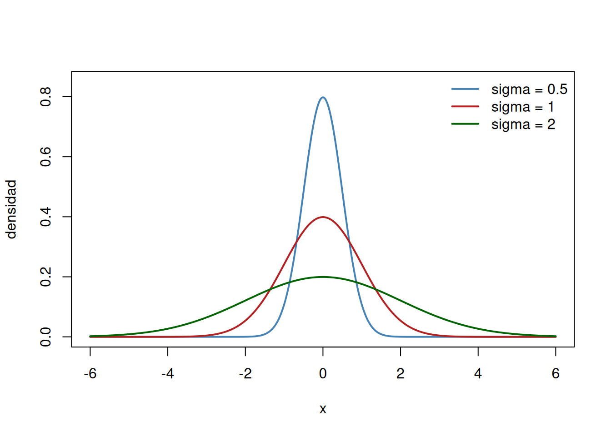

Variables aleatorias continuas y la distribución normal
Función de densidad, la función Gamma, la fórmula de Stirling, y la distribución normal
Definición de variable aleatoria continua y función de densidad; un interludio analítico que construye la función Gamma y la fórmula de Stirling mediante el método de Laplace, y la función Beta; la distribución normal, su verificación como función de densidad.
Autor
Arturo Sanjuán
Fecha de publicación
5 de septiembre de 2026
1 Variables aleatorias continuas y función de densidad
Sea \(X\) una variable aleatoria. Se dice que \(X\) es absolutamente continua si existe una función \(f_X\) no negativa e integrable tal que
\[F_X(x) = \int_{-\infty}^x f_X(u)\,du\]
donde \(F_X\) es la función de distribución de \(X\). A la función \(f_X\) se le llama función de densidad de \(X\). De la definición se sigue de inmediato que
\[\int_{-\infty}^\infty f_X(x)\,dx = 1\]
Si queremos calcular, por ejemplo, \(P(a<X\le b)\), basta con restar:
\[P(a<X\le b) = F_X(b)-F_X(a) = \int_a^b f_X(x)\,dx\]
Esta fórmula se puede generalizar, usando teoría de la medida, a
\[P(X\in B) = \int_B f_X(x)\,dx\]
para cualquier boreliano \(B\), no solo para intervalos.
ImportanteUn punto de honestidad, sin teoría de la medida
En este curso no tenemos teoría de la medida ni la integral de Lebesgue, así que la fórmula anterior necesita una precisión. La integral de Riemann, que es la que manejamos, solo se define directamente sobre intervalos (y uniones finitas de intervalos). La extensión de \(P(X\in B)=\int_B f_X\) a un boreliano \(B\) arbitrario no viene de la integral de Riemann en sí, sino de los axiomas de σ aditividad de la probabilidad: se aproxima \(B\) por uniones de intervalos y se usa que \(P\) es σ aditiva para pasar al límite. Vale la pena tener clara esta distinción, aunque en la práctica casi todos los conjuntos con los que trabajemos sean uniones de intervalos y la sutileza no se note.
par(mfrow =c(1, 2))curve(dunif(x, 2, 5), from =0, to =7, n =1000, col ="steelblue", lwd =2,xlab ="x", ylab =expression(f[X](x)), main ="Densidad")curve(punif(x, 2, 5), from =0, to =7, n =1000, col ="firebrick", lwd =2,xlab ="x", ylab =expression(F[X](x)), main ="Distribución")

Figura 1: Densidad y función de distribución de U(2, 5)
TipEjemplo: el tiempo de espera de un bus
Un bus pasa por una parada exactamente cada \(20\) minutos, pero un pasajero llega a la parada en un instante al azar, sin saber cuánto falta para el próximo bus. Si \(T\) es el tiempo de espera, en minutos, un modelo razonable es \(T\sim U(0,20)\): no hay ningún instante dentro de esos \(20\) minutos que sea más probable que otro.
¿Cuál es la probabilidad de esperar más de \(15\) minutos?
\[P(T>15) = \frac{20-15}{20} = \frac14\]
¿Y la probabilidad de esperar entre \(5\) y \(10\) minutos?
\[P(5<T<10) = \frac{10-5}{20} = \frac14\]
2 Interludio analítico: la función Gamma
Antes de motivar y definir la distribución normal necesitamos dos herramientas: la función Gamma (que generaliza el factorial a los reales positivos) y, a partir de ella, la fórmula de Stirling, que usaremos más adelante para deducir la aproximación normal a la Poisson y a la binomial.
2.1 Convergencia de las integrales que definen a Gamma
TipLema 1
Para todo \(s\in\mathbb R\), la integral \(\displaystyle\int_1^\infty x^s e^{-x}\,dx\) converge.
Demostración. Para \(x\ge1\), la serie de Taylor de \(e^x\) da, para cualquier entero \(n\),
Por la propiedad arquimediana existe \(n_0\) tal que \(n_0>s+1\), y por ende \(x^{n_0}\ge x^{s+1}\) (pues \(x\ge1\)), de donde \(x^{n_0-s-1}\ge1\). Así,
De este modo, \(e^{-x}x^s\to0\) cuando \(x\to\infty\), para todo \(s\in\mathbb R\). En particular, \(e^{-x}x^s/x^{-2}\to0\), así que existe \(x_0>0\) tal que \(e^{-x}x^s\le x^{-2}\) para todo \(x\ge x_0\). Entonces
pues el primer sumando es la integral de una función continua en un intervalo acotado, y el segundo converge por ser una \(p\) integral con \(p=2>1\). \(\blacksquare\)
NotaTarea
Demuestre que \(\displaystyle\int_0^1 t^{-s}\,dt\) converge para \(s<1\) (calcule directamente la antiderivada de \(t^{-s}\) y estudie cuándo el límite en \(0\) es finito).
TipLa función Gamma
La función
\[\Gamma(s) := \int_0^\infty t^{s-1}e^{-t}\,dt\]
converge para todo \(s>0\): en \([1,\infty)\) por el Lema 1 (con exponente \(s-1\)), y en \((0,1]\) porque \(t^{s-1}e^{-t}\le t^{s-1}\) y \(\int_0^1 t^{-(1-s)}\,dt\) converge para \(1-s<1\), es decir para \(s>0\), por la tarea anterior.
2.2 La recursión \(\Gamma(n+1)=n\,\Gamma(n)\)
Calculemos primero \(\Gamma(1)\):
\[\Gamma(1) = \int_0^\infty e^{-t}\,dt = 1\]
Ahora, para \(n\) entero positivo, integramos por partes con \(u=t^n\), \(dv=e^{-t}dt\) (así \(du=nt^{n-1}dt\), \(v=-e^{-t}\)):
(el término de frontera se anula en ambos extremos: en \(0\) porque \(n\ge1\), y en \(\infty\) por el Lema 1). Con \(\Gamma(1)=1\), la recursión da \(\Gamma(2)=1\cdot\Gamma(1)=1\), \(\Gamma(3)=2\cdot\Gamma(2)=2\), \(\Gamma(4)=3\cdot\Gamma(3)=6\), y en general
Es decir, \(\Gamma\) generaliza el factorial a cualquier real positivo: para argumentos enteros recupera el factorial (desplazado en uno), y entre los enteros interpola de forma suave.
2.3 La integral gaussiana, vía coordenadas polares
Necesitamos también \(\Gamma(1/2)\), y para eso hace falta calcular \(\int_0^\infty e^{-x^2}\,dx\). El truco clásico es elevar al cuadrado y pasar a coordenadas polares:
Con \(x=r\cos\theta\), \(y=r\sin\theta\), \(\theta\in(0,\pi/2)\), \(r\in(0,\infty)\) (el cuadrante donde \(x,y>0\)), el jacobiano de la transformación es \(r\), así que
De la recursión \(\Gamma(n+1)=n\,\Gamma(n)\), ahora aplicada con argumentos semienteros, se obtienen todos los demás valores en \(\mathbb N+\tfrac12\):
y verifique la fórmula contra los casos \(n=1,2\) ya calculados arriba.
2.4 Función Beta
Para \(x,y>0\), definimos
\[B(x,y) := \int_0^1 t^{x-1}(1-t)^{y-1}\,dt\]
NotaTarea: convergencia
Esta es una integral impropia en \(0^+\) y en \(1^-\). Separe \(\int_0^1=\int_0^{1/2}+\int_{1/2}^1\) y acote cada pedazo (en el primero, \((1-t)^{y-1}\le(1/2)^{y-1}\); en el segundo, de forma simétrica) para mostrar que ambos convergen cuando \(x,y>0\), usando el mismo tipo de argumento del Lema 1.
La relación entre \(B\) y \(\Gamma\) se obtiene con la misma idea de coordenadas polares de antes, generalizada. Partiendo de la sustitución \(t=u^2\) en la definición de \(\Gamma\) (como hicimos para \(\Gamma(1/2)\)),
(la integral en \(r\) es, de nuevo, \(\Gamma(x+y)\) vía \(t=r^2\)). Falta reconocer la integral en \(\theta\) como una \(B\). Con \(w=\sin^2\theta\) (así \(dw=2\sin\theta\cos\theta\,d\theta\)),
3 Fórmula de Stirling (informal), vía el método de Laplace
Necesitamos, para más adelante, saber cómo se comporta \(n!\) cuando \(n\) es grande. La técnica que usamos para deducirlo (aproximar una función suave y muy picuda por una parábola alrededor de su máximo) es la misma que reutilizaremos después para la aproximación normal a la Poisson y a la binomial, así que vale la pena verla aquí primero, en su forma más simple.
Partimos de \(n! = \Gamma(n+1) = \int_0^\infty x^n e^{-x}\,dx = \int_0^\infty e^{n\ln x - x}\,dx\). El exponente \(f(x)=n\ln x - x\) satisface \(f'(x)=n/x-1\), que es cero exactamente en \(x=n\): ahí el integrando alcanza su máximo.
Hacemos el cambio de variable \(x=ny\):
\[n! = n\int_0^\infty e^{n\ln(ny)-ny}\,dy = n\int_0^\infty e^{n\ln n + n\ln y - ny}\,dy = n^{n+1}\int_0^\infty e^{n(\ln y - y)}\,dy = \left(\frac ne\right)^n n\int_0^\infty e^{n(\ln y - y+1)}\,dy\]
Sea \(g(y):=\ln y - y+1\). Como \(g'(y)=1/y-1\), \(g\) alcanza su máximo en \(y=1\), donde \(g(1)=0\) y \(g''(1)=-1\). Taylor de orden \(2\) alrededor de \(y=1\) da
Para \(n\) grande, \(e^{ng(y)}\) decrece muy rápido lejos de \(y=1\), así que la contribución de la integral está concentrada cerca de \(y\approx1\), y podemos reemplazar \(g\) por su aproximación cuadrática y extender la integral a toda la recta:
Se nota \(X\sim N(\mu,\sigma^2)\). Cuando \(\mu=0\) y \(\sigma=1\) se llama normal estándar.
NotaTarea
Demuestre que \(f_X(\cdot;\mu,\sigma)\) es, en efecto, una función de densidad: que es no negativa (inmediato) y que integra \(1\). Para lo segundo, sustituya \(u=(x-\mu)/\sigma\) y use la integral gaussiana \(\int_{-\infty}^\infty e^{-u^2/2}\,du=\sqrt{2\pi}\) deducida arriba (solo hay que reescalar: si \(\int e^{-x^2}dx=\sqrt\pi\), ¿cuánto vale \(\int e^{-u^2/2}du\)?).
NotaTarea
Toda normal se puede estandarizar con el cambio de variable \(Z=\dfrac{X-\mu}\sigma\). Demuestre que si \(X\sim N(\mu,\sigma^2)\) entonces \(Z\sim N(0,1)\) (calcule la función de distribución de \(Z\) en términos de la de \(X\) y derive).
ImportanteNota histórica
La curva normal apareció por primera vez en 1733, en un pequeño panfleto en latín que Abraham de Moivre (matemático francés exiliado en Londres) circuló de forma privada entre algunos colegas, incorporado más tarde a la segunda edición de su libro The Doctrine of Chances. De Moivre no la obtuvo estudiando errores de medición ni fenómenos naturales, sino tratando de aproximar sumas de términos binomiales para juegos de azar, y para eso necesitó estimar \(n!\) para \(n\) grande, lo que lo llevó a la fórmula que hoy llamamos de Stirling (que de Moivre dedujo primero, y que James Stirling refinó poco después con la constante exacta \(\sqrt{2\pi}\), la misma fórmula que acabamos de deducir arriba).
Casi ochenta años después, Carl Friedrich Gauss llegó a la misma curva de forma independiente, en 1809, en su tratado sobre el movimiento de los cuerpos celestes: mostró que si los errores de una observación astronómica se distribuyen así, la media aritmética de varias observaciones es la mejor estimación posible del valor verdadero, lo cual justificaba el método de mínimos cuadrados. Esta aplicación a la teoría de errores es la razón por la que la curva también se llama distribución gaussiana.
Fue Pierre Simon Laplace quien conectó ambos hilos y les dio su alcance definitivo: entre 1810 y 1812 (en su Théorie analytique des probabilités) extendió el resultado puntual de de Moivre sobre la binomial a un enunciado general, el teorema central del límite, que explica por qué la misma curva aparece como límite de sumas de variables independientes casi sin importar su distribución original. Por eso el resultado que veremos en la próxima sección, sobre la Poisson y la binomial, se conoce como el teorema de de Moivre y Laplace.
El nombre “distribución normal” es en realidad bastante posterior a las tres personas anteriores, y su origen exacto se disputa entre los historiadores: se atribuye, de forma independiente y hacia la década de 1870, a Charles Peirce, Francis Galton y Wilhelm Lexis, aunque fue Karl Pearson quien terminó de fijar el nombre en la literatura estadística hacia 1895. Es una pequeña ironía que la curva llevara casi siglo y medio circulando entre matemáticos antes de que alguien la llamara “normal”.
5 Un repaso intuitivo: media y varianza
Antes de seguir, vale la pena detenerse un momento en qué miden \(\mu\) y \(\sigma\) en la fórmula de arriba, más allá de ser “parámetros”.
Si \(X\) es una variable aleatoria discreta con valores posibles \(x_1,x_2,\ldots\), la media de \(X\) es el promedio de esos valores, ponderado por qué tan probable es cada uno:
\[\mu = \sum_i x_i\,P(X=x_i)\]
Es útil pensarla como un centro de masa: si en cada punto \(x_i\) de la recta real colocaras una pesa de tamaño \(P(X=x_i)\), \(\mu\) es el punto exacto donde la balanza queda equilibrada. No es necesariamente un valor que \(X\) pueda tomar (el promedio de caras en dos lanzamientos de moneda es \(1\), que sí es alcanzable, pero el promedio del resultado de un dado es \(3{,}5\), que no lo es), es simplemente el centro alrededor del cual se reparte la probabilidad.
La varianza mide qué tan dispersos están los valores posibles alrededor de esa media:
\[\sigma^2 = \sum_i (x_i-\mu)^2\,P(X=x_i)\]
Es el promedio, otra vez ponderado por probabilidad, de qué tan lejos (al cuadrado) cae cada valor posible respecto al centro de masa. Se eleva al cuadrado por dos razones: para que las desviaciones por encima y por debajo de la media no se cancelen entre sí al sumarlas, y para penalizar más las desviaciones grandes que las pequeñas. La raíz cuadrada de la varianza, \(\sigma\), se llama desviación estándar, y tiene la ventaja de quedar en las mismas unidades que \(X\) (si \(X\) mide milímetros, \(\sigma\) también mide milímetros, mientras que \(\sigma^2\) quedaría en milímetros al cuadrado, una cantidad sin interpretación física directa). Por eso, cuando se quiere describir qué tan disperso es algo en las unidades originales del problema, se cita \(\sigma\), no \(\sigma^2\).
En la normal, \(\mu\) y \(\sigma\) son exactamente estos dos números: \(\mu\) ubica el centro (y el único pico) de la curva, y \(\sigma\) controla qué tan ancha o angosta es. Dos normales con la misma \(\mu\) pero distinta \(\sigma\) están centradas en el mismo punto, pero una es más alta y angosta (varianza chica) y la otra más baja y extendida (varianza grande), siempre con área total \(1\) debajo de la curva.
curve(dnorm(x, 0, 0.5), from =-6, to =6, n =1000, col ="steelblue", lwd =2,xlab ="x", ylab ="densidad", ylim =c(0, 0.85))curve(dnorm(x, 0, 1), add =TRUE, col ="firebrick", lwd =2, n =1000)curve(dnorm(x, 0, 2), add =TRUE, col ="darkgreen", lwd =2, n =1000)legend("topright", legend =c("sigma = 0.5", "sigma = 1", "sigma = 2"),col =c("steelblue", "firebrick", "darkgreen"), lwd =2, bty ="n")

Figura 2: Tres normales con la misma media (mu=0) y distinta desviación estándar
6 La regla empírica: 68, 95 y 99.7 por ciento
Una consecuencia directa de la forma de la curva normal (y que vale para cualquier \(\mu,\sigma\), gracias a la estandarización) es qué tan concentrada está la probabilidad alrededor de la media, medida en unidades de \(\sigma\):
Es decir, aproximadamente el \(68\%\) de la probabilidad vive a menos de una desviación estándar de la media, el \(95\%\) a menos de dos, y prácticamente todo (\(99{,}7\%\)) a menos de tres.
7 Ejemplo aplicado: control de calidad en fabricación
TipEjemplo
Una fábrica produce tornillos cuya longitud, en milímetros, se modela como \(X\sim N(50,\,0{,}5^2)\): la media nominal es \(50\)mm, con una desviación estándar de \(0{,}5\)mm debida a variaciones normales del proceso de fabricación. Un tornillo pasa el control de calidad si su longitud está entre \(49\)mm y \(51\)mm.
¿Qué porcentaje de la producción pasa el control? Como \(49=50-2(0{,}5)\) y \(51=50+2(0{,}5)\), el rango de aceptación es exactamente \([\mu-2\sigma,\mu+2\sigma]\), así que por la regla empírica
\[P(49\le X\le51) \approx 0{,}9545\]
Alrededor de un \(4{,}55\%\) de la producción se rechaza.
¿Qué pasa si además se rechaza cualquier tornillo de más de \(51{,}5\)mm, sin importar qué tan cerca esté del límite inferior? Aquí \(51{,}5=50+3(0{,}5)\), así que estandarizando, \(z=(51{,}5-50)/0{,}5=3\), y